Línea del tiempo
Nuestra historia, hito por hito
Tocá cada hito para abrir su ficha. Filtrá por tipo de hito; cada rama puede proponer los suyos para que se sumen.
Ideal Nacional · 20 de agosto de 2018
Con María, pasión que transforma
Nuestra misión comunitaria: la que Dios y la Mater pensaron para la Juventud Masculina Argentina. La misión que nos enciende y por la cual queremos arder.
Nuestra Madre, la que cambió nuestro corazón. Desde el Santuario es educadora firme y tierna. Preside el ideal, porque siempre presidió nuestra vida.
El fuego de la misión: el modo más argentino de entregarse a Dios y a los demás, que impulsa a la acción heroica en el día a día.
Salir al encuentro de todos para transformar y dejarnos transformar. Al reconocer nuestro ser, estamos conectados, complementados y plenificados.
JNJ Chaco · 2017
Los símbolos de nuestra identidad
Símbolos que expresan valores y vivencias y van formando una “cultura JM”. En La Plata (2023) se eligieron los tres más representativos.
JNJ Paraná · Manual del símbolo, julio 2024
El símbolo nacional
Tras una convocatoria abierta con decenas de propuestas, se eligió en oración el símbolo que une todo el camino. Tocá cada elemento.

Mística del Ideal Nacional
El ideal en cada etapa de la JM
Reina, Madre y primera Bandera. Hito: conquistar el santuario habitación u hogar.
Acción, reflexión, acción. Libertad, valentía y liderazgo. Hito: conquistar el Fuego del 2014.
Transformarse por dentro y transformar la realidad. Hito: tiempo de alianzas.
Oración del Ideal Nacional
María, Reina de nuestra Juventud:
hoy te consagramos
el fuego de nuestro corazón
y la pasión
para entregarnos como hijos de Dios.
Como JM Argentina,
queremos vivir siempre junto a vos
nuestro ideal,
salir al encuentro de todos,
para transformar
y dejarnos transformar.
Llámanos,
agárranos fuerte,
conduce nuestras vidas.
Amén.
Manos a la obra · JNJ Paraná 2019
Estrategias de la JM Nacional
Las cinco estrategias que los jefes de rama definieron para implementar el Ideal. Abrí cada una para ver qué propone y cómo se vive.